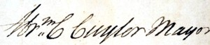

Abraham C. Cuyler
 Abraham C. Cuyler was the last mayor of colonial Albany and a wealthy businessman. However, this native son lost everything as a result of his actions during the American Revolution.
Abraham C. Cuyler was the last mayor of colonial Albany and a wealthy businessman. However, this native son lost everything as a result of his actions during the American Revolution.
He was born in Albany in 1742 - the fifth son of Cornelis and Cathalina Schuyler Cuyler. His father was a merchant, landholder, and mayor of Albany from 1742 to 1746. His mother was a daughter of Albany's foremost New Netherland-era family.
In April 1764, this Abraham Cuyler married his second ward neighbor Jannetje (Janet) Glen at the Albany Dutch Church. The first of their five children was born the following June. With the passing of his father in 1765, twenty-three-year-old Abraham assumed Cornelis Cuyler's place in Albany business and in the family home above North Pearl Street. He also succeeded to his father's seat on the Albany Common Council. Prospering from importing metalware and from the patronage of Sir William Johnson, city assessment rolls for 1766 and 1767 show him to be among the wealthiest of the young Albany merchants. Unlike other city fathers, this younger son did not inherit extensive family lands. Thus, opportunity for future real estate acquisition was dependent on his connection to the royal government.
In 1767, he was the captain of an Albany militia company composed of his kin and city neighbors.
In September 1770, twenty-eight-year old Abraham C. Cuyler became the third member of his family to be appointed mayor of Albany.  What soon would become a dubious honor was based on his standing within the Albany community and on his willingness to cooperate with the royal government during a time of increasing tension between British and American interests. His tenure at city hall paralleled the rapid development of Albany and its hinterland following the end of the last French and Indian War in 1763.
However, in 1775 Cuyler's administration was curtailed when escalating conflict between colonists and king led to suspension of royal government across New York. It ended in June 1776 when he was among those arrested by the Revolutionaries and exiled to Connecticut. Later transferred to prison at Fishkill, he escaped to the British but made several trips to Albany to visit his family. By 1778, his wife and children had joined him in New York.
Abraham C. Cuyler suffered greatly from his attachment to the British government. Deprived of his property and condemned to death under the Act of Attainder in 1779, a destitute Cuyler sailed to England to seek relief. Granted an annuity, he returned to New York. After the peace treaty, he attempted to come home. This American Tory soon learned there was no place for him in the new Albany. Even though many of his kinsmen were prominent revolutionaries, he was unable to reclaim his Albany property. Shunned by the new and old people of his birthplace, Abraham C. Cuyler took his family to upper Canada, founded the town of Yorkfield, and died there in 1810.
 The life of Abraham C. Cuyler is CAP biography number 359. This sketch is derived chiefly from family and community-based resources.
The life of Abraham C. Cuyler is CAP biography number 359. This sketch is derived chiefly from family and community-based resources.
This portrait by an unknown artist now hangs at "Cuyler Manor," a house museum and country estate at Port Elizabeth (Uitenhage), South Africa. This copy is from the Afrikaans language Het Geslacht Kuilart by J. W. Schaap and H. H. J. Kuilart (South Africa, 1984), 25.
The Abraham Cuylers: Another contemporary Abraham N. Cuyler married Margarita Wendell in 1768. Virtually every Cuyler household in the area in each generation had a son named "Abraham."
Signature of Mayor "Abrm. C. Cuyler" on a document dated September 1774 granting Peter Van Bergen freedom of the city. The provenance of the document is unknown but it was offered for sale as part of an online auction in March 2014.
{kind=link}